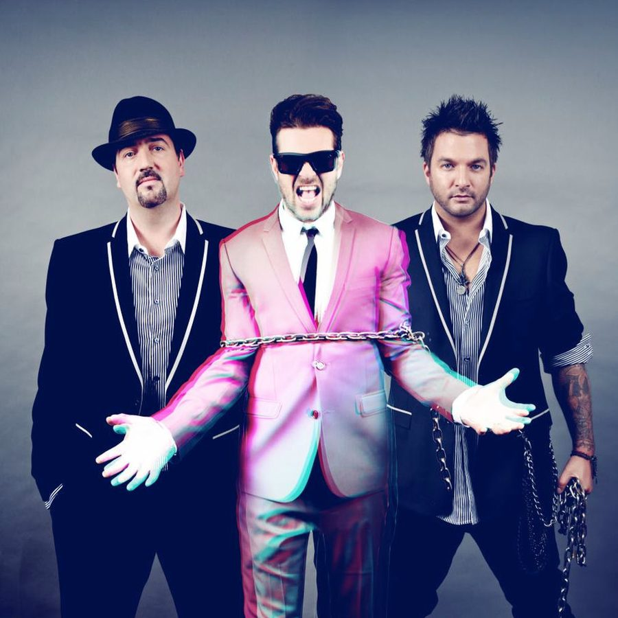

The Potbelleez [Audio]: You can't hold them back


STREAMING AUDIO INTERVIEW
It could be said that the story of The Potbelleez is something of a dance music fairytale…
Two Irish lads meet for the first time in Sydney, forming an instant bond over their shared love of house music. Lads begin DJing around town and, thanks to their hard work and dogged persistence, have a profile that’s steady to grow. After a while the duo make the natural transition into the studio, releasing their debut EP on famed Australian label Vicious, and getting music licensed to – rather bizarrely – the reality TV show Big Brother. Lads further hone their studio craft, and unleash what’s set to be their biggest track to date.
Appropriately titled ‘Don’t Hold Back’, if you don’t know the song by name just yet, we can positively guarantee that by the end of summer 2008 you’ll have the instantly recognisable guitar melody and sing-a-long vocal hook permanently etched into your memory. The song signals big things for Jonny Sonic and Dave Goode, and with their recent placing at #13 on the 2007 inthemix50 (up a staggering 34 spots on their 2006 position), the future is looking bright indeed.
The Potbelleez are in the midst of a national tour to launch ‘Don’t Hold Back’, which is out now on Vicious/EMI. You can catch them at the following clubs and festivals over the coming months:
3/11: Onelove at Curlys Bar, Hobart
4/11: Effigy 49’s, Sydney
9/11: Splashes, Wollongong
10/11: Onelove at The Prince, Melbourne
16/11: Sublime at Home, Sydney
17/11: King Street Hotel, Newcastle
18/11: Fluffy Festival, Brisbane
23/11: Limelite, Fremantle
24/11: Club4play, Geelong
25/11: Bedroom, Gold Coast
1/12: Stereosonic Festival, Melbourne
14/12: Roi, Albury
16/12: Bedroom, Gold Coast
22/12: Club 4play, Geelong
31/12: Family, Brisbane
1/1: Ministry Of Sound NYD, Sydney